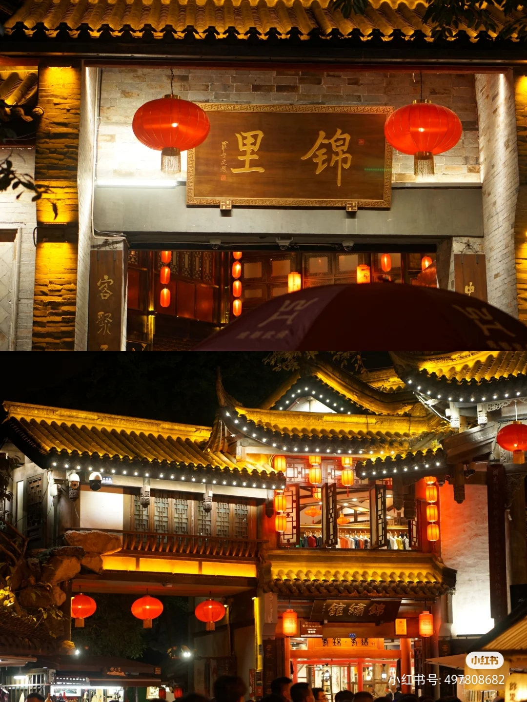
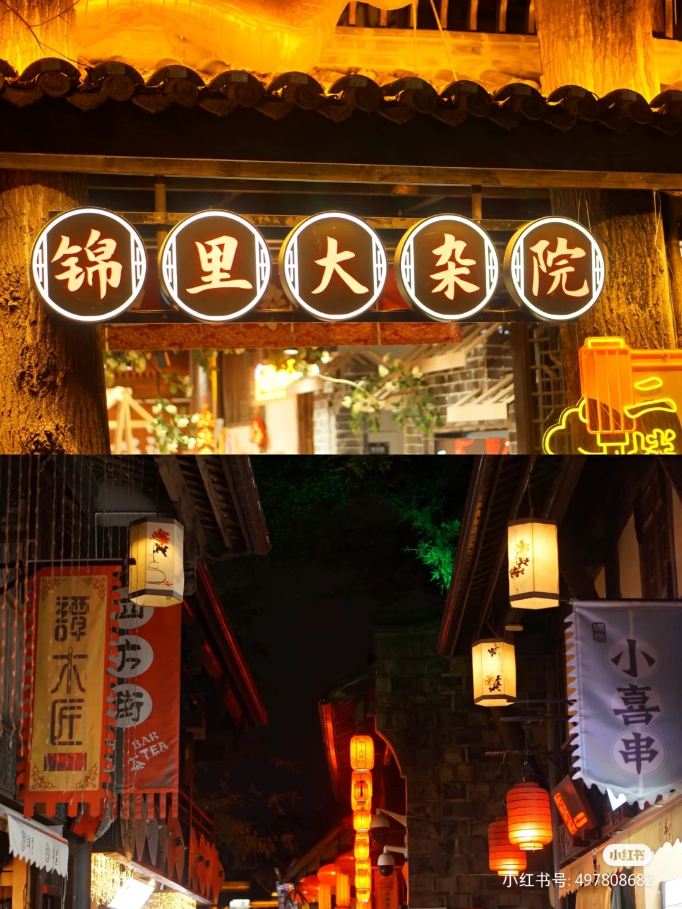
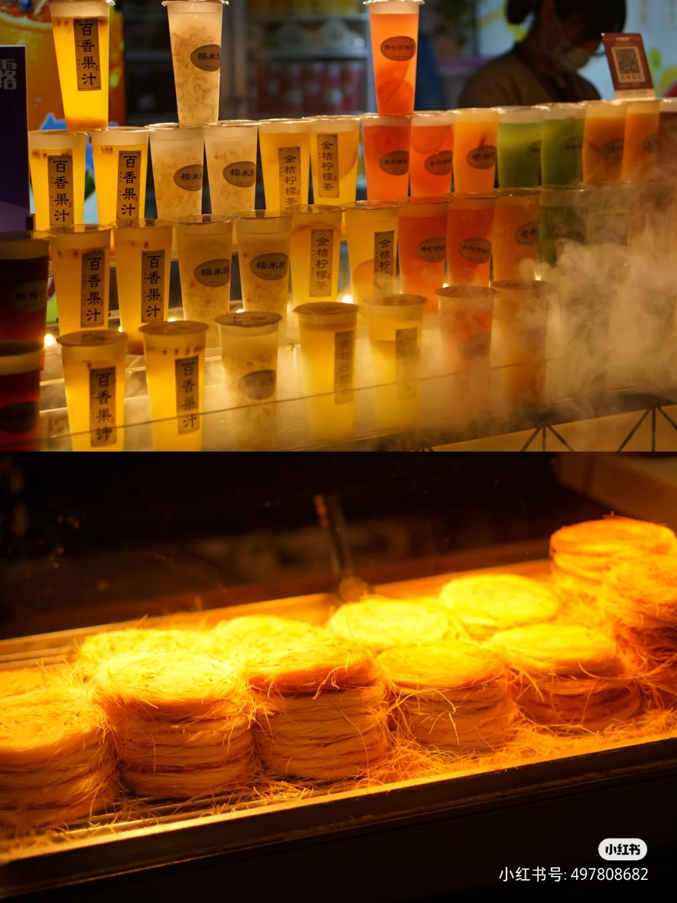
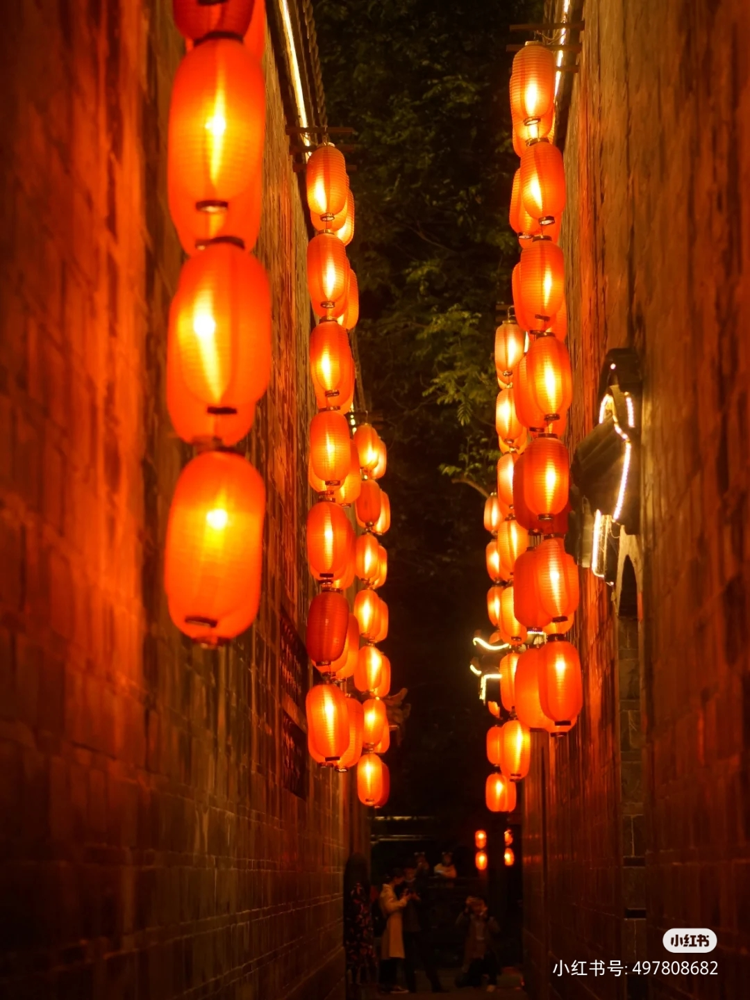
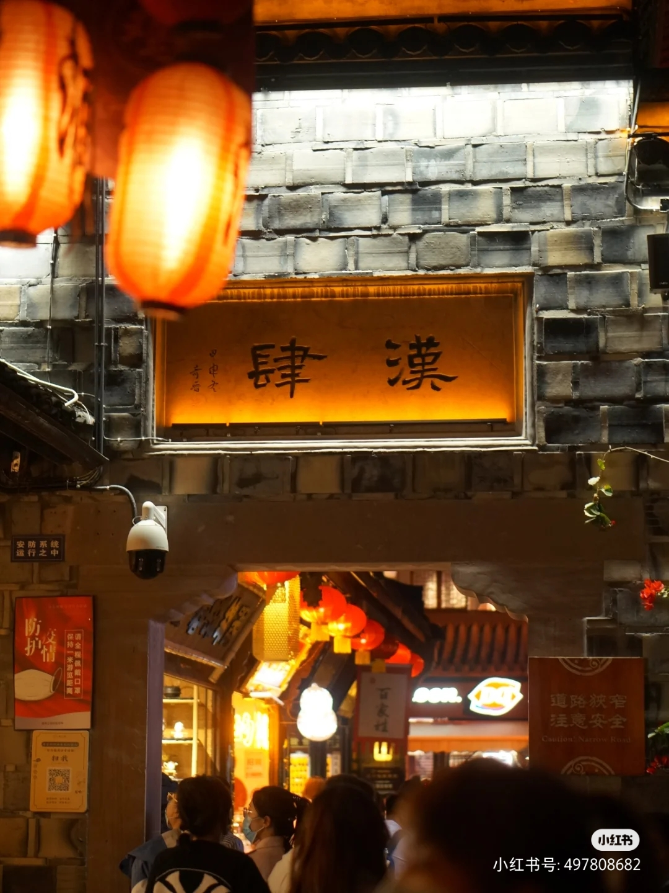
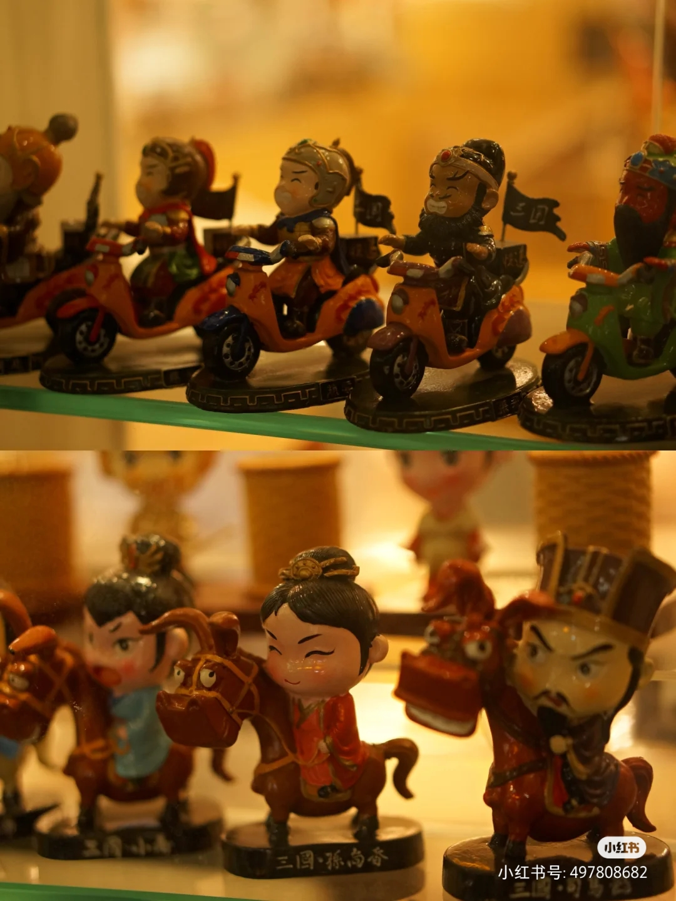

chengDu
chengDu锦里
锦里

成都

成都

成都

成都

成都

成都
锦里是一条仿古商业街，是成都人气最旺景点之一，也是成都武侯祠博物馆的一部分。
在这里，你可以欣赏捏泥人、摆糖画的手艺，也可以逛逛极富三国特色的店铺。
街里还有各种四川特色小吃，各种茶楼、咖啡馆、酒吧、客栈等随时可落座
黄昏时分，锦里会亮起灯，颇有韵味，适合拍照游玩。
咨询电话
028-66311313;85538914
网址
http://www.cdjinli.com
用时参考
1-3小时
交通
【地铁】
乘地铁2号线至人民公园站下车，步行约400米即可到达。
乘地铁4号线至宽窄巷子站下车，步行约300米即可到达。
【公交】
乘62/70/93/163/340路公交车至实业街站/长顺中街站下车，步行约320米即可到达。
门票
免费
tips:
庙会期间需购买门票，具体以景区公示为准。
开放时间
全天(全天)
(1月1日-12月31日 周一至周日)
游客评价
Message not yet sent
上传你的评价吧：
提交
回到首页
回到顶部